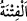

(dinden yüz çevirir). O, dünyasını da, âhiretini de kaybetmiştir. İşte bu, apaçık
ziyanın ta kendisidir.
Rivâyete göre bu âyet Medîne’ye gelen bâzı bedevîler hakkında nâzil olmuştur.
Onlardan birisinin bedeni sağlam olduğu, kısrağı tay verdiği, hanımı erkek çocuk
doğurduğu, malı ve davarı çoğaldığı zaman “Bu dinime girdiğimden beri başıma ancak
hayır geldi.” der ve memnun olurdu. Eğer durum tersine olursa: “Başıma ancak kötülük
geldi.” der ve dinden dönerdi. İşte bunlar hakkında Allah Teâlâ şöyle buyurdu:
“İnsanlardan kimi Allah’a yalnız bir yönden” yâni dinin ortasından ve kalbinden
değil bir kenarından “kulluk eder.” Dinde sebâtı yoktur. Tıpkı ordunun kenarına kayan,
eğer zafer olacağını hissederse yerinde duran, aksi halde kaçan kimse gibi.
“ uç ve kenar demektir. Cisimlerin sıfatlarından olan bir şeyle dînin
vasfedilmesi temsîlî istiâre yoluyladır. Râgıb der ki: “Alfabenin harfleri, kelimelerin uç
ve kenarlarıdır. Kelimelerin bir kısmını bir kısmına bağlar.”
“Şöyle ki: Kendisine” sıhhat ve genişlik gibi “bir iyilik dokunursa” ulaşırsa “buna
pek memnun olur,” o iyilik sâyesinde dinde karar kılar. “el-İtmi’nân” tedirginlikten
sonra sükûn bulmaktır. Kâşifî der ki: “Dinde sükûnete erer ve o iyilik sebebiyle onda
sabit kadem olur.” Yâni o kimse bulunduğu hâl üzere bâtınen değil zâhiren sebât eder.
Çünkü onda sağlam mü’minlerin itminânı yoktur.
“Bir de musibete uğrarsa” yâni kendisine, âilesine veya malına gelen istenmeyen bir
şeyle imtihan edilirse “çehresi değişir.” İrtidâd eder, dinden yüz çevirir ve küfre döner.
Kâşifî der ki: “Kendine döner; yani geldiği yöne geri döner. Kasdedilen onun mürted
olup, İslâm dininden çıkmasıdır.”
“ ile kasdedilen tabîatın kerih gördüğü ve nefse ağır gelen şeydir. Aksi halde
onun hayrın/iyiliğin mukabili kılınması doğru olmazdı. Çünkü kişiye hayrın/iyiliğin
mukabili olduğu halde ona bir şer/kötülük erişse bile o da bir fitne ve imtihandır. Zîrâ
tabîatın kendisinden nefret ettiği şey bizzat şer değildir. Bilakis teslimiyet ve kazâya
rızâ şartı ile kurbete/Hakk’a yakınlığa ve derecenin yükselmesine sebeptir.
Fakir (Bursevî) der ki: “Bahru’l-ulûm’daki: “Sırt çevirir, yüzüstü kapaklanır, daha
önceki hâli olan küfre geri döner.” ifâdesi, “ nın “” mânâsına olduğuna işâret
nın “” mânâsına olduğuna işâret
etmektedir. Nitekim bâzıları “ Yeryüzünde yürüyen her
canlının rızkı, yalnızca Allah’ın üzerinedir/Allah’tandır.” (Hûd, 11/6) âyetinde de
aynı görüşe varmışlardır. Bahru’l-ulûm’da onu yöneldiği cihet olan İslâm’a sırt
çevirmek olarak tefsir etmiştir.
“O, dünyasını da âhiretini de kaybetmiştir.” Mâsûmiyetinin elden gitmesi ve irtidad
ile amelinin boşa çıkması sebebiyle her ikisini de zâyi etmiştir. Âşikâr olan onun
dünyasını kaybetmesi, kendisine isâbet eden musîbet sebebiyle âilesini yitirmesidir.
Âhiretini kaybetmesi ise din elden gittiği için sevabdan mahrum olması ve cehenneme
girenlerle birlikte oraya girmesidir. Nitekim Kâşifî der ki: “Muradına erememesinden
dolayı dünyada ziyana uğrar. Amellerinin boşa gitmesinden ötürü âhirette de zarar